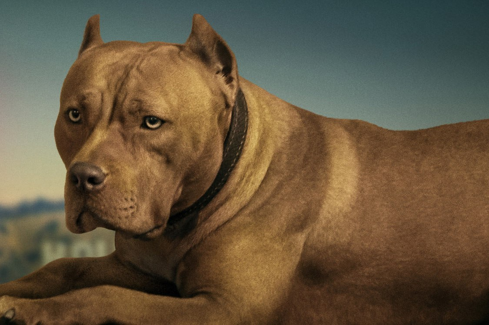
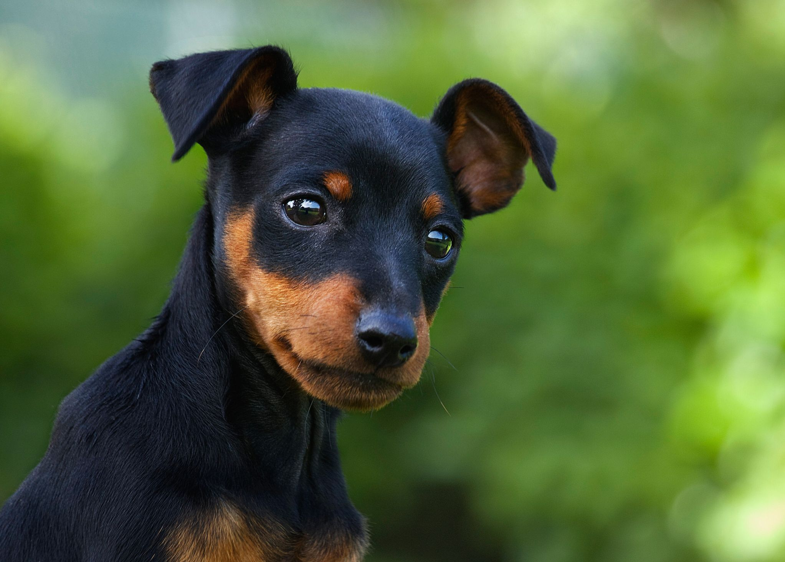

The domestic dog (Canis lupus familiaris when considered a subspecies of the wolf or Canis familiaris when considered a distinct species)[5] is a mammal, a member of the genus Canis (canines), which forms part of the wolf-like canids,[6] and is the most widely abundant terrestrial carnivore.[7][8][9][10][11] The dog and the extant gray wolf are sister taxa[12][13][14] as modern wolves are not closely related to the wolves that were first domesticated,[13][14] which implies that the direct ancestor of the dog is extinct.[15] The dog was the first species to be domesticated,[14][16] and has been selectively bred over millennia for various behaviors, sensory capabilities, and physical attributes.[17]

In 1758, the Swedish botanist and zoologist Carl Linnaeus published in his Systema Naturae the binomial nomenclature – or the two-word naming – of species. Canis is the Latin word meaning "dog",[21] and under this genus he listed the dog-like carnivores including domestic dogs, wolves, and jackals. He classified the domestic dog as Canis familiaris, and on the next page he classified the wolf as Canis lupus.[3] Linnaeus considered the dog to be a separate species from the wolf because of its cauda recurvata - its upturning tail which is not found in any other canid.[22]

In 1999, a study of mitochondrial DNA indicated that the domestic dog may have originated from multiple grey wolf populations, with the dingo and New Guinea singing dog "breeds" having developed at a time when human populations were more isolated from each other.[23] In the third edition of Mammal Species of the World published in 2005, the mammalogist W. Christopher Wozencraft listed under the wolf Canis lupus its wild subspecies, and proposed two additional subspecies: "familiaris Linneaus, 1758 [domestic dog]" and "dingo Meyer, 1793 [domestic dog]". Wozencraft included hallstromi – the New Guinea singing dog – as a taxonomic synonym for the dingo. Wozencraft referred to the mDNA study as one of the guides in forming his decision.[1] The inclusion of familiaris and dingo under a "domestic dog" clade has been noted by other mammalogists.[24] This classification by Wozencraft is debated among zoologists.[25]

The origin of the domestic dog includes the dog's evolutionary divergence from the wolf, its domestication, and its development into dog types and dog breeds. The dog is a member of the genus Canis, which forms part of the wolf-like canids, and was the first species and the only large carnivore to have been domesticated.[14][26] The dog and the extant gray wolf are sister taxa, as modern wolves are not closely related to the population of wolves that was first domesticated.[14] The genetic divergence between dogs and wolves occurred between 40,000–20,000 years ago, just before or during the Last Glacial Maximum.[27][2] This timespan represents the upper time-limit for the commencement of domestication because it is the time of divergence and not the time of domestication, which occurred later.[27][28] The domestication of animals commenced over 15,000 years ago, beginning with the grey wolf (Canis lupus) by nomadic hunter-gatherers.[27] The archaeological record and genetic analysis show the remains of the Bonn–Oberkassel dog buried beside humans 14,200 years ago to be the first undisputed dog, with disputed remains occurring 36,000 years ago. The domestication of the dog predates agriculture.[2] It was not until 11,000 years ago that people living in the Near East entered into relationships with wild populations of aurochs, boar, sheep, and goats.[27]

Where the domestication of the dog took place remains debated, with the most plausible proposals spanning Western Europe,[9][28] Central Asia[28][29] and East Asia.[28][30] This has been made more complicated by the recent proposal that an initial wolf population split into East and West Eurasian groups. These two groups, before going extinct, were domesticated independently into two distinct dog populations between 14,000 and 6,400 years ago. The Western Eurasian dog population was gradually and partially replaced by East Asian dogs introduced by humans at least 6,400 years ago.[28][2] This proposal is also debated.[2]

Domestic dogs have been selectively bred for millennia for various behaviors, sensory capabilities, and physical attributes.[17] Modern dog breeds show more variation in size, appearance, and behavior than any other domestic animal.[17] Dogs are predators and scavengers; like many other predatory mammals, the dog has powerful muscles, fused wrist bones, a cardiovascular system that supports both sprinting and endurance, and teeth for catching and tearing.